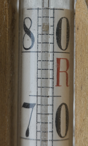

SI.Temperatures
Additionally to the base SI unit Kelvin, there are four other temperature
scales:
Celsius (also called Centigrade), Rankine, Fahrenheit, and
Réaumur.
Only Celsius and Fahrenheit are in use nowadays.
Of these, only the former is allowed parallel to SI units.
Kelvin and Celsius use the same unit interval.
So do Rankine and Fahrenheit.
Kelvin and Rankine are thermodynamic temperatures (they use the absolute zero as zero
points).
Celsius and Réaumur use the same fundamental distance between the ice point and the
vapour point, but divide it into 100 resp. 80 unit intervals.
The following relations exist:
| Fahrenheit |
0°F = -17.78°C |
|
32°F = 0°C |
|
x°C = (9/5*x + 32)°F |
| Rankine |
0°R = 0 K |
|
x K = (9/5)*x°R |
| Celsius |
0°C = 273.15 K |
|
x K = (x - 273.15)°C |
| Réaumur |
0°R = 0°C |
|
80°R = 100°C |
|
x°R = (5/4)*x°C |
Note: Rankine and Réaumur use the same symbol °R in literature (formerly,
Rankine was also denoted by °Rank resp. deg R).
Since Réaumur has long been out of use, this does not lead to ambiguities.
By the way: I actually own a
Réaumur thermometer (saved
over time from my grandparents
or my wife's), the kind that was
once used by washerwomen in
the washtubs.
(It's a quicksilver thermometer,
has an overall length of 51 cm,
and is not easy to read.)
|
|

It's hot: 24.6°R!
My digital thermo-
meter shows 31.2°C.
|

The unit indication
Réaumur.
|
Temperatures measured in non-thermodynamic units have a very
limited range of applications.
They basically serve only as a scale, but cannot be used in physical
equations.
If defined naively, nonsensical equations can be written.
Ada.Calendar with its use of the types Time
and Duration serves as a model for specifying temperature
operations:
It is nonsensical to add Celsius degrees, their difference in fact is
a value in Kelvin.
Only the operations defined here seem to make sense to me:
generic
package Generic_SI.Generic_Temperatures is
type Celsius is private;
function "*" (Left: Real'Base; Right: String) return Celsius with Pre => Right = "°C" or else raise Unit_Error;
function "+" (T: Celsius) return Celsius;
function "-" (T: Celsius) return Celsius;
function "+" (T: Celsius; Delta_T: Temperature) return Celsius;
function "-" (Left, Right: Celsius) return Temperature;
function "<" (Left, Right: Celsius) return Boolean;
function "<=" (Left, Right: Celsius) return Boolean;
function ">=" (Left, Right: Celsius) return Boolean;
function ">" (Left, Right: Celsius) return Boolean;
function to_Celsius (T: Temperature) return Celsius;
function to_Kelvin (T: Celsius ) return Temperature;
function Value (T: Celsius) return Real'Base;
private
Not shown
end Generic_SI.Generic_Temperatures;
Constructor
The cnstructor is formed in accordance with the one of the parent package.
Of course, only this unit string is allowed.
function "*" (Left: Real'Base; Right: String) return Celsius with Pre => Right = "°C";
function "*" (Left: Real'Base; Right: String) return Item; -- SI
TC: Celsius := 30.40*"°C"; -- Celsius
TK: Item := 203.55*"K"; -- Kelvin
TC: Celsius := 30.40*"K"; -- raises Unit_Error
TK: Item := 203.55*"°C"; -- raises Unit_Error
Operators
No preconditions are needed for the operators.
Table_of_Contents
SI.Temperatures.Strings
SI.Temperatures.Text_IO